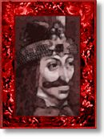

| vlad |
| home page |
| The roots of the tree represent our Unitarian roots in Transylvania and the leaves show our religion blossoming outside Transylvania. . scenes FROM TRANSYLVANIA SCENES FROM TRANSYLVANIA Dracula's Castle in Bran. This castle should not be mistaken for the actual Castle Dracula (now in ruins), which is located on the Arges River, at a more secluded site. Levente at the cultural center in Tirgu Mures which displays the mythology of Transylvania in stained glass windows. |
|  | Help build the largest human-edited directory on the web. .htm A travel piece on Transylvania, Romania, by Jeffrey Tayler. com The Count Kalnoky family returned to their property in Transylvania after 50 years of exile in the west. They offer it now as unusual travel destination for lovers of history, culture, nature and wildlife. |